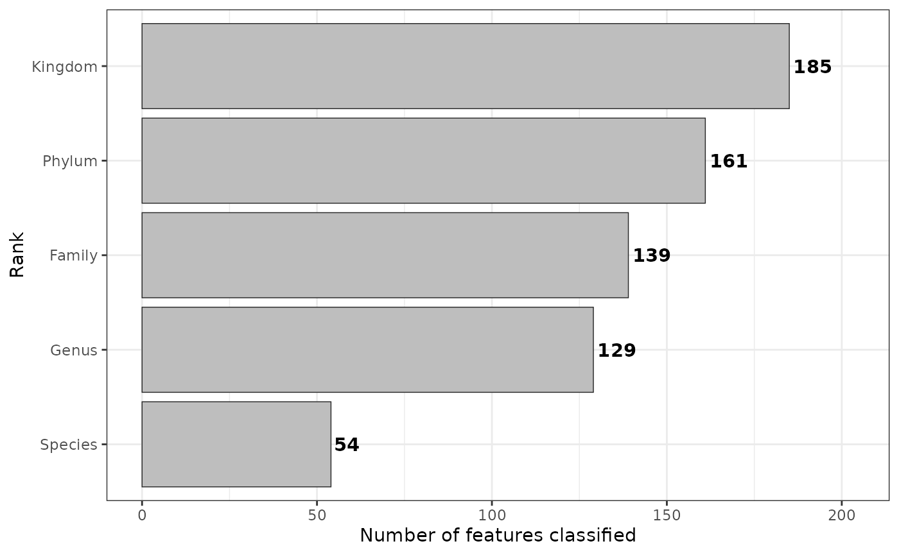
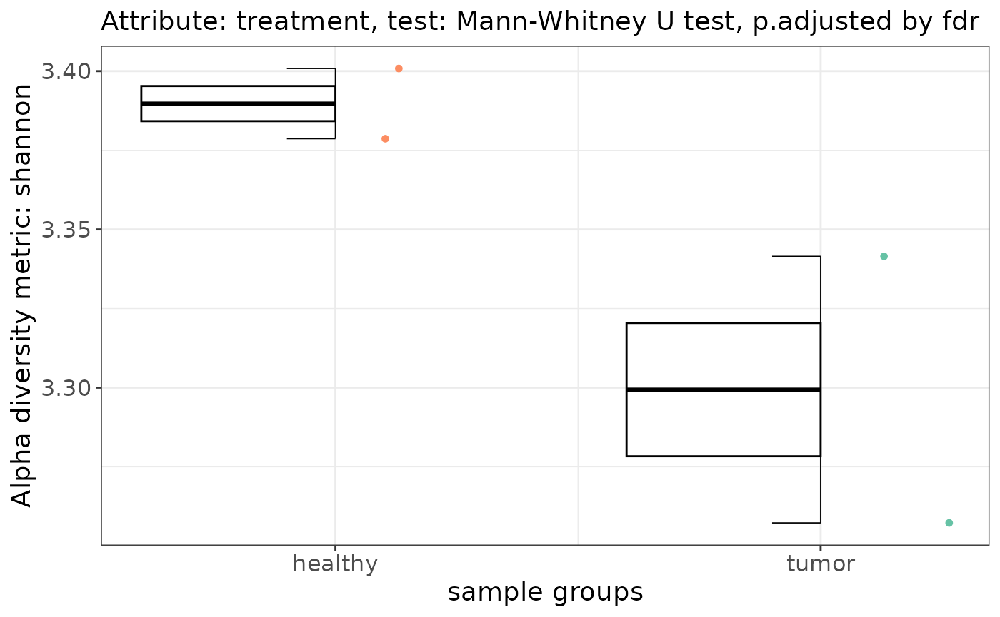
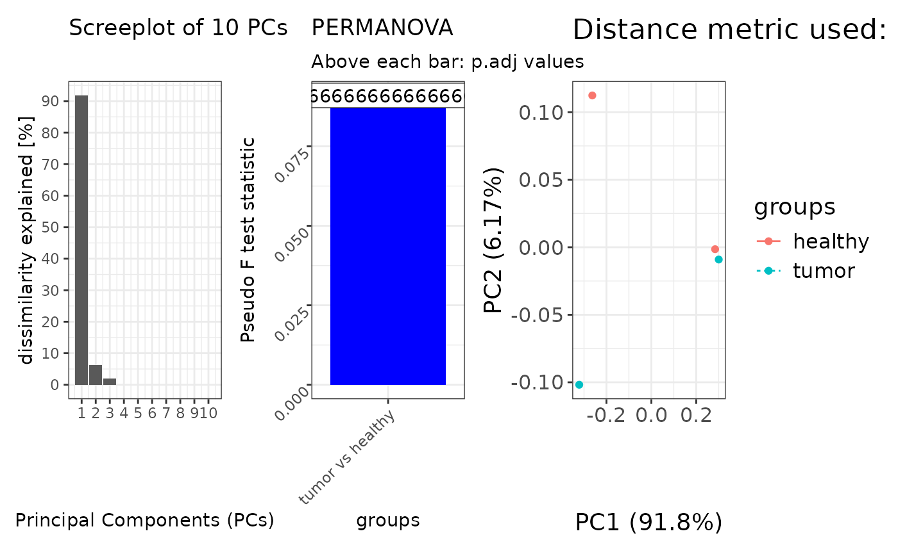
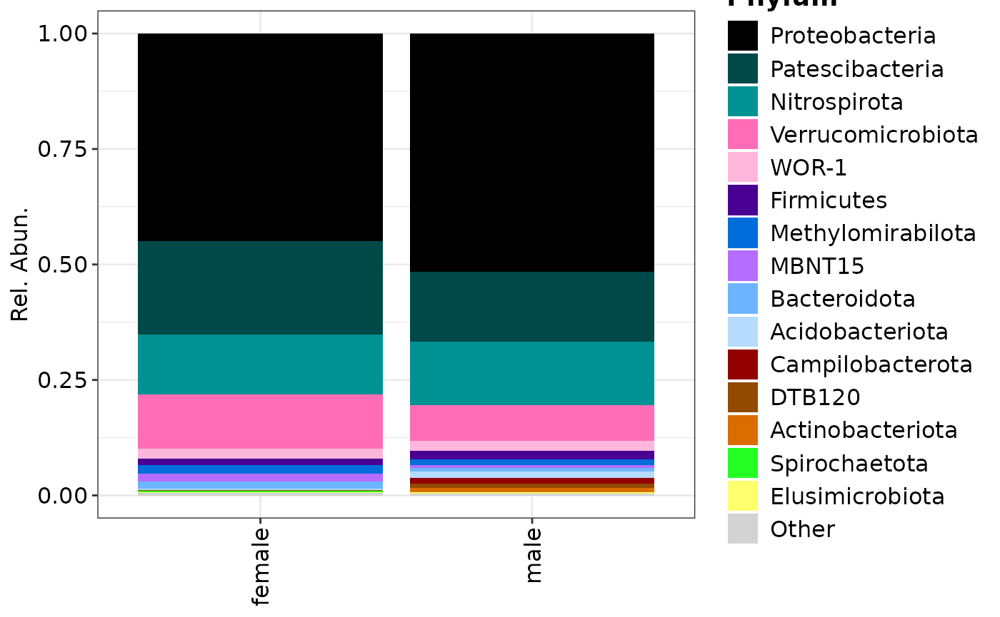
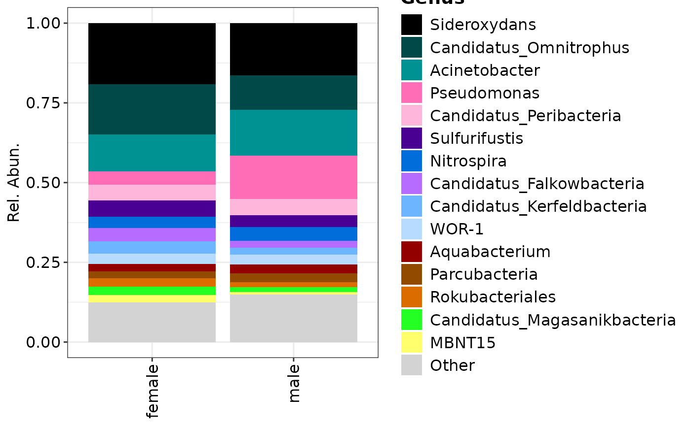
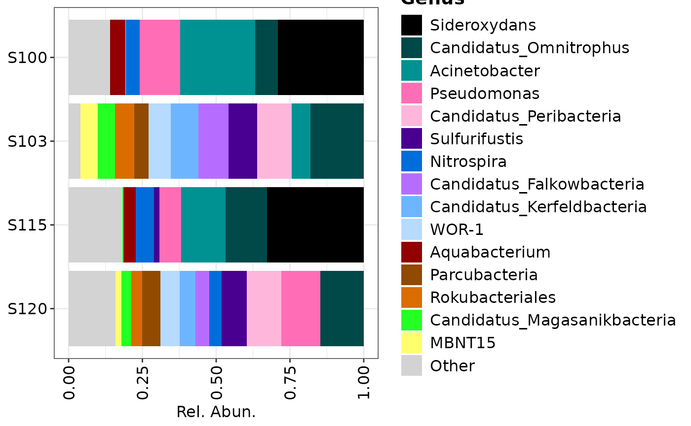

Here we give some examples in how to use the
metagenomics class from loading your data to visualization
and some statistical testing. In the study of microbial communities we
often look at the alpha- (i.e. alpha_diversity function),
beta- (i.e. ordination function) diversities, and
compositions and or fold-change differences.
The following functions do not change the object itself and always output the results.
rankstatalpha_diversityordinationcompositionfoldchange
Other similar functions that are not discussed:
Loading and data-wrangling
Below an example is shown for creating a metagenomics
class from text files. The same procedure is also possible via
biomData see the metagenomics$new,
and the loaded files from text or BIOM can also be written out as a
BIOM formatted hdf5 file via write_biom.
library("OmicFlow")
#> Loading required package: R6
#> Loading required package: data.table
#>
#> Attaching package: 'data.table'
#> The following object is masked from 'package:base':
#>
#> %notin%
#> Loading required package: Matrix
library("ggplot2")
## Loading example set
metadata_file <- system.file("extdata", "metadata.tsv", package = "OmicFlow")
counts_file <- system.file("extdata", "counts.tsv", package = "OmicFlow")
features_file <- system.file("extdata", "features.tsv", package = "OmicFlow")
tree_file <- system.file("extdata", "tree.newick", package = "OmicFlow")
## Initializing taxa object
taxa <- metagenomics$new(
metaData = metadata_file,
countData = counts_file,
featureData = features_file,
treeData = tree_file
)
#> ✔ metaData template passed the JSON validation.
#> ℹ Checking for duplicated identifiers ..
#> ✔ featureData is loaded.
#> ✔ countData is loaded.
#> ✔ treeData is loaded.
#> ℹ Final steps .. cleaning & creating back-up
#>
#> ── <metagenomics> object
#> metaData: 9 variables × 4 samples
#> countData: 4 samples × 242 features
#> featureData: 7 attributes × 242 features
#> treeData: 242 tips × 241 nodes
## Subseting to `Bacteria`
taxa$feature_subset(Kingdom == "Bacteria")
#>
#> ── <metagenomics> object
#> metaData: 9 variables × 4 samplescountData: 4 samples × 185 featuresfeatureData: 7 attributes × 185 featurestreeData: 185 tips × 184 nodes
## Classical total-sum scaling by sample-level
taxa$scale(method = "tss")Number of classified ASVs
plt <- taxa$rankstat(feature_ranks = c("Kingdom", "Phylum", "Family", "Genus", "Species"))
plt
Please visit rankstat for more information.
Alpha- and Beta-diversity
Alpha diversity
alpha_res <- taxa$alpha_diversity(
col_name = "treatment",
metric = "shannon",
paired = FALSE # If TRUE it performs wilcox signed rank test
)
alpha_res$plot
Please visit alpha-diversity docs for more information.
Beta diversity
By default PERMANOVA is applied pairwise against each group within
the specified contrast, via group_by that is used in
pairwise_adonis. The permutation design in
vegan::adonis2 is by default set to free. But
this may not always be the right test when you have paired samples and
you also want to restrict permutations between correlated values.
Therefore, pairwise_adonis supports a custom permutation
design, which can be constructed via permute
and fed into vegan::adonis2 as a function via
pairwise_adonis with the flag perm_design.
Performing ordination with tests without a permutation design
set.seed(1970)
# Perform ordinations with in-built distance matrix computation
#--------------------------------------------------------------------------------
beta_div <- taxa$ordination(
metric = "unifrac",
method = "pcoa",
group_by = "treatment",
perm = 999
)
#> 'nperm' >= set of all permutations: complete enumeration.
#> Set of permutations < 'minperm'. Generating entire set.
patchwork::wrap_plots(
beta_div[c("scree_plot", "anova_plot", "scores_plot")],
nrow = 1)
#> Warning: Removed 7 rows containing missing values or values outside the scale range
#> (`geom_col()`).
#> Too few points to calculate an ellipse
#> Too few points to calculate an ellipse
#> Warning: Removed 2 rows containing missing values or values outside the scale range
#> (`geom_path()`).
Beta-diversity with a custom dissimilarity matrix
# Add a custom pre-computed distance matrix (e.g. from QIIME2)
#--------------------------------------------------------------------------------
qiime_unifrac <- data.table::fread("weighted-unifrac-matrix.tsv", header=TRUE)
distmat <- Matrix::Matrix(as.matrix(qiime_unifrac[, .SD, .SDcols = !c("V1")]))
rownames(distmat) <- colnames(distmat)
distmat <- distmat[taxa$metaData[["SAMPLE_ID"]], taxa$metaData[["SAMPLE_ID"]]]
distmat <- as.dist(distmat)
beta_div <- taxa$ordination(
distmat = distmat,
method = "pcoa",
group_by = "treatment",
perm = 999
)Beta-diversity with a permutation design, you can also run
pairwise_adonis outside of the classes, check the docs.
# Add a custom permutation design via `perm_design`
#--------------------------------------------------------------------------------
## taxa$ordination() automatically will input taxa$metaData inside the supplied function.
perm_design_func <- function(meta) {
base::with(
data = meta,
expr = permute::how(
nperm = 999,
plots = permute::Plots(meta$SAMPLEPAIR_ID, type = "none"), # In case samplepair ids is supplied
within = permute::Within(type = "free")
)
)
}
beta_div <- taxa$ordination(
metric = "unifrac",
method = "pcoa",
group_by = "treatment",
perm_design = perm_design_func
)Please visit beta-diversity docs for more information
Compositions of bacteria
Compositional plots can be made from stacks or over all samples, the
feature_rank uses feature_merge
in the background but it doesn’t modify the object.
## Plotting only Phylum rank
phylum <- taxa$composition(
feature_rank = "Phylum",
# This can be a vector of multiple keywords or `NULL`
feature_filter = c("uncultured"),
# The maximum is 15 for visualisation purposes.
feature_top = 15,
# This can be a vector of multiple keywords
col_name = "CONTRAST_sex"
)
#>
#> ── <metagenomics> object
#> metaData: 9 variables × 4 samples
#> countData: 4 samples × 20 features
#> featureData: 7 attributes × 20 features
#> treeData: 20 tips × 19 nodes
composition_plot(
data = phylum$data,
palette = phylum$palette,
feature_rank = "Phylum",
group_by = "CONTRAST_sex"
)
taxa
#>
#> ── <metagenomics> object
#> metaData: 9 variables × 4 samplescountData: 4 samples × 185 featuresfeatureData: 7 attributes × 185 featurestreeData: 185 tips × 184 nodes
## Plotting only Genus rank
genera <- taxa$composition(
feature_rank = "Genus",
feature_filter = c("uncultured"),
feature_top = 15,
col_name = "CONTRAST_sex"
)
#>
#> ── <metagenomics> object
#> metaData: 9 variables × 4 samplescountData: 4 samples × 56 featuresfeatureData: 7 attributes × 56 featurestreeData: 56 tips × 55 nodes
## Plotting genera grouped by samples
composition_plot(
data = genera$data,
palette = genera$palette,
feature_rank = "Genus",
group_by = "CONTRAST_sex"
)
## Plotting only genera over all samples
composition_plot(
data = genera$data,
palette = genera$palette,
feature_rank = "Genus"
)
Fold-change
The foldchange of the metagenomics class
differs from those in omics and proteomics.
Namely, it expects the data to be proportional, and it cannot handle
log-transformed data. This will soon change!
taxa$foldchange(
feature_rank = "Genus",
paired = FALSE,
condition.group = "treatment",
# Able to split your data into male/female
group_by = "CONTRAST_sex",
condition_A = c("healthy"),
condition_B = c("tumor")
)Please visit foldchange for more information.
Proteomics
In the case of proteomics or other omics
classes, not all functions discussed here can be applied. For example in
the context of proteomics, data is often log-transformed and methods
such as unifrac or alpha-diversity metrics cannot be applied on data
with negative values. On top of that, visualising compositions or
rankstat isn’t always informative. Therefore, other omics
data often follow the log-transformed route, where
ordination with the euclidean distance can be
applied to investigate differences in communities, followed by
fold-change differences.